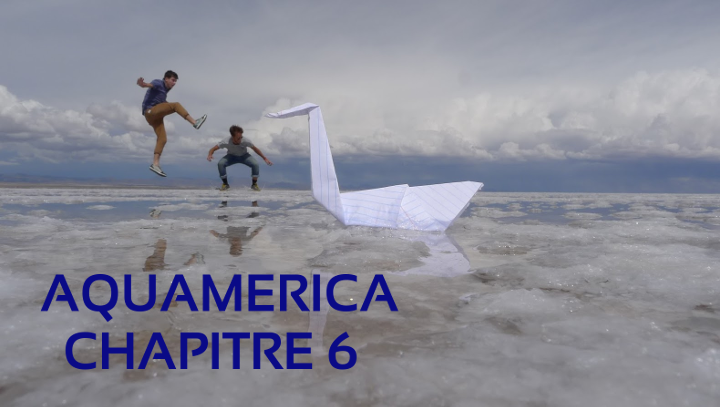

A chacune des 7 étapes identifiées nous réaliserons une vidéo pour mettre en lumière un aspect particulier de l'usage de l'eau douce.
FOLLOW THE WHITE SWAN
0 - Aquamerica Teaser
30 avril 2015
1 - Alaska/Canada, l'eau en abondance et le spectre de la fonte des glaces
19 septembre 2015
Plus d'infos dans notre article d'étude
2 - Montana : eau, agriculture & élevage
16 octobre 2015
Plus d'infos dans notre article d'étude
3 - Sud Ouest américain : sécheresse et populations
15 novembre 2015
Plus d'infos dans notre article d'étude
4 - Mexique : eau et santé dans les pays en développement
21 décembre 2015
Plus d'infos dans notre article d'étude
5 - Amazonie : les défis de la pollution et de la déforestation
31 janvier 2016
Plus d'infos dans notre article d'étude
6 - Eau, gouvernements et entreprises
11 mars 2016

Malheureusement suite au vol de notre caméra à Santiago nous avons perdu les séquences vidéo de notre reportage sur le sujet. Vous pouvez tout de même retrouver notre analyse dans notre article d'étude
7 - Faces of Aquamerica
28 mai 2016
On dédie nitre dernière vidéo à toutes les personnes qu'on a croisées pendant notre voyage et qui nous ont aidé. On ne les oublie pas !